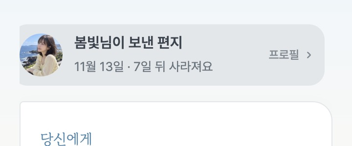

프로필 속 산책 이야기가 마음에 남았어요.
함께 이야기 나눠보고 싶어요.
편지 세부 · 보낸 사람 줄 누르기
받은 편지 화면 맨 위 “봄빛님이 보낸 편지 · 프로필 ›” 줄(누르면 상대 프로필)을 고치는 시안이에요. 앱은 아직 바꾸지 않았어요. 폰은 앱과 같은 크기 · 색으로 다시 그렸고, 왼쪽 폰은 직접 눌러 볼 수 있어요.
지금

- 눌림 배경이 왼쪽에서 잘려요. 줄이 사진을 편지지 왼쪽 선에 맞추려고 양옆 8px씩 넓게 그려지는데, 화면 칸이 넘치는 부분을 잘라서 왼쪽은 네모로 끊기고 사진이 회색 끝에 붙어요. (새로운 소식 줄과 같은 원인)
- 오른쪽은 편지지보다 8px 더 나가요. 양쪽 끝이 아래 편지지와 맞지 않아요.
- 누르는 느낌이 없어요. 회색이 갑자기 깔릴 뿐 크기 · 움직임 변화가 없고, 전환이
transition: all로 걸려 있어요.
개선안
P1 · 배경 없이 눌림 추천
프로필 속 산책 이야기가 마음에 남았어요.
함께 이야기 나눠보고 싶어요.
사진은 지금처럼 편지지 왼쪽 선에 그대로 두고, 누르면 줄 전체가 살짝 작아지고(0.98) 사진 · 글자가 옅어지며 “프로필 ›” 화살표가 오른쪽으로 2px 움직여요. 배경을 깔지 않아서 잘릴 것이 없고, 화면 둘레를 가볍게 둔 지금 편지 화면(L2)과도 맞아요. 누르는 영역은 줄 전체(높이 60, 너비 칸 전체).
P2 · 칸 안에 눌림 배경
프로필 속 산책 이야기가 마음에 남았어요.
함께 이야기 나눠보고 싶어요.
프로필 속 산책 이야기가 마음에 남았어요.
함께 이야기 나눠보고 싶어요.
눌림 배경을 화면 칸 너비에 맞춰 양쪽 끝이 편지지와 같은 선에 와요. 대신 사진이 왼쪽에서 12 안으로 들어가서 편지지 글자 선과는 어긋나요. 누르면 0.98로 작아지며 회색 배경이 120ms에 깔려요.
P3 · 늘 보이는 카드
프로필 속 산책 이야기가 마음에 남았어요.
함께 이야기 나눠보고 싶어요.
프로필 속 산책 이야기가 마음에 남았어요.
함께 이야기 나눠보고 싶어요.
“새로운 소식”의 교환 요청 줄처럼 흰 카드로 늘 보여서 누를 수 있다는 게 가장 분명해요. 대신 편지지 위에 카드가 하나 더 생겨 위쪽이 무거워지고, 지금의 가벼운 둘레(L2)에서 멀어져요.